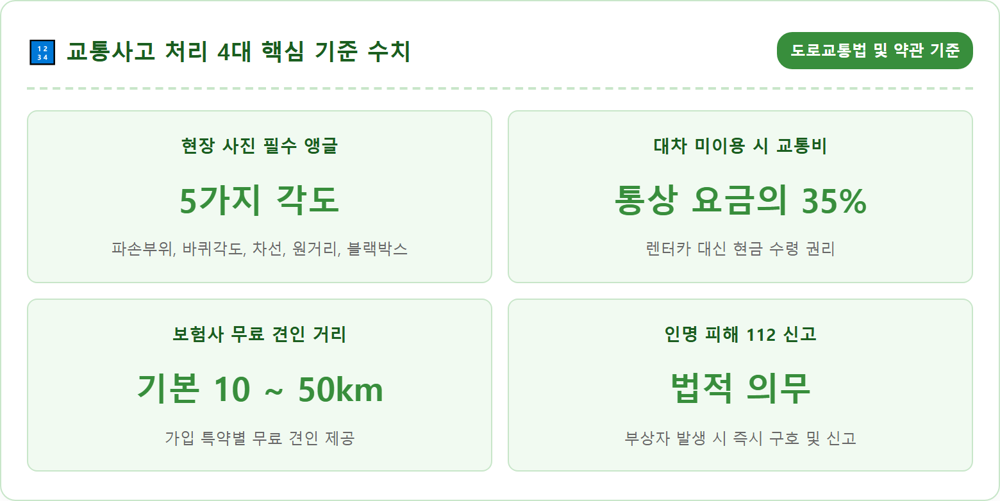
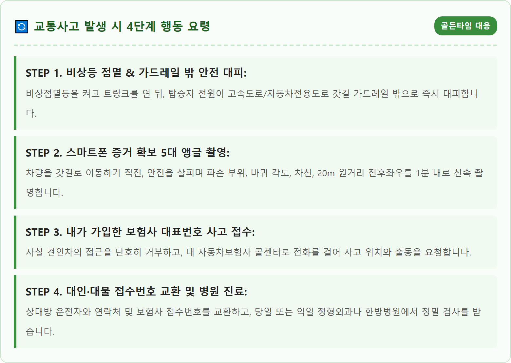
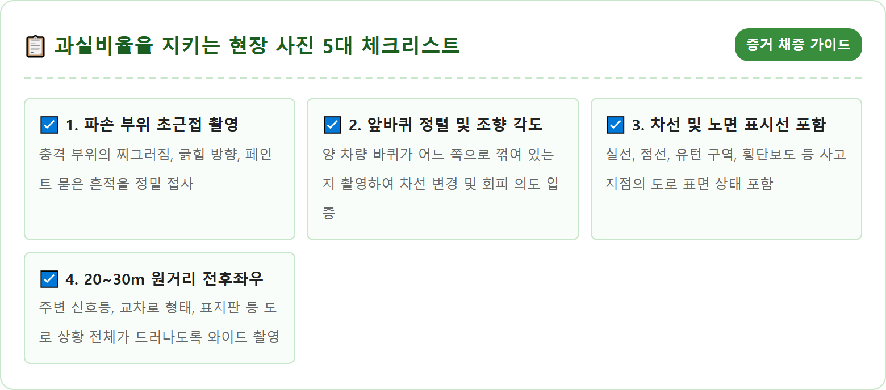
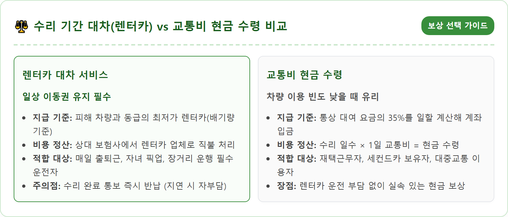
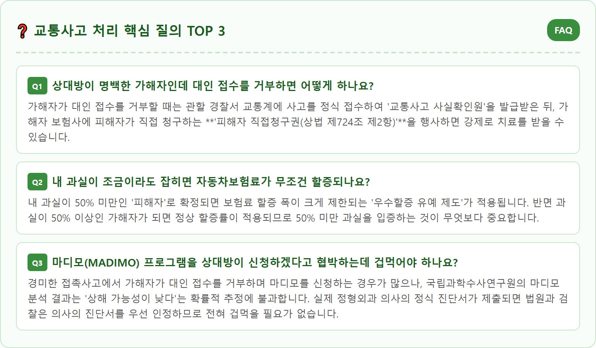

A crisp and realistic urban road scene following a minor traffic accident in South Korea. Two modern passenger cars are stopped safely near the shoulder with emergency hazard lights flashing. A calm driver is carefully taking detailed evidence photos of the car bumper damage and lane markings using a smartphone. In the background, a safety warning triangle is placed appropriately. Clear daylight, professional consumer safety advice atmosphere, high detail, 8k resolution, authentic Korean road traffic scenario, informative and reassuring tone.

아무리 베테랑 운전자라 하더라도 도로 위에서 쾅 하는 충돌음과 함께 교통사고가 발생하면 극심한 당황과 충격에 휩싸이게 됩니다. 심장이 두근거리고 이성적인 판단이 마비되기 쉬운 사고 직후 5분 동안 어떤 행동을 취하느냐에 따라 내 생명의 안전과 향후 과실비율 산정의 결과가 180도 달라집니다.
사고 발생 순간 가장 먼저 해야 할 일은 심호흡을 크게 하고 기어를 'P(주차)'에 놓은 뒤 시동을 끄고 비상점멸등을 켜는 것입니다. 그다음 운전자 자신과 동승자의 부상 여부를 빠르게 확인해야 합니다. 만약 목이나 허리에 극심한 통증이 있거나 피를 흘리는 부상자가 있다면 환자를 억지로 움직이지 말고 즉시 119에 구조 요청을 해야 합니다.
단순 접촉 사고라 하더라도 도로 한가운데에서 차 문을 열고 나와 상대 운전자와 삿대질을 하며 "왜 끼어들었냐", "당신 과실이다"라며 언성을 높이는 것은 절대 금물입니다. 현장에서의 감정싸움은 과실비율 결정에 아무런 법적 효력이 없을 뿐만 아니라, 뒤따라오는 차량에 치이는 끔찍한 2차 사고를 자초하는 가장 위험한 행동입니다.

고속도로나 자동차전용도로에서 교통사고가 발생했을 때 가장 두려워해야 할 것은 최초의 충돌이 아니라 뒤이어 시속 100km로 덮쳐오는 '2차 사고'입니다. 경찰청 통계에 따르면 고속도로 2차 사고의 치사율은 약 54%로, 일반 교통사고 치사율의 무려 5배가 넘는 무시무시한 살인 흉기입니다.
차량이 주행 차로에 멈춰 섰다면 비상점멸등을 켜고 트렁크 리드를 위로 활짝 열어 후방 차량에 이상 상황임을 시각적으로 알립니다. 주간에는 후방 100m, 야간에는 후방 200m 지점에 안전삼각대나 불꽃신호기를 설치하는 것이 원칙이지만, 고속 주행 차량이 쌩쌩 달리는 야간 도로에 삼각대를 놓으러 걸어가는 행위 자체가 매우 위험하므로 무리하게 설치하려 하지 마십시오.
사진 촬영도 안전이 100% 확보된 찰나에만 진행해야 하며, 1분 이내로 핵심만 찍었다면 지체 없이 운전자와 동승자 전원이 고속도로 **가드레일 바깥쪽(방호벽 너머 언덕 풀숲)**으로 몸을 완전히 피해야 합니다. "차 안에 가만히 앉아 있는 것이 안전하다"는 생각은 고속도로에서 절대로 통하지 않습니다.

블랙박스가 대중화되었지만, 충돌 당시의 충격으로 영상이 누락되거나 왜곡된 화각으로 인해 가해자와 피해자가 뒤바뀌는 분쟁이 여전히 빈번합니다. 사고 직후 스마트폰으로 촬영한 몇 장의 현장 사진은 향후 보험사 과실 협상과 분쟁조정위원회에서 법적 판결문 못지않은 결정적 효력을 발휘합니다.
반드시 확보해야 할 5대 앵글은 다음과 같습니다. 첫째, **'파손 부위 초근접 사진'**으로 충돌 높이와 스크래치의 깊이, 방향을 통해 상대 차의 속도와 진입 각도를 역추적할 수 있습니다. 둘째, 가장 중요한 **'앞바퀴의 조향 각도'**입니다. 바퀴가 어느 방향으로 꺾여 있는지는 차선 변경이나 급차선 변경 시도 여부를 판가름하는 핵심 물증이 됩니다.
셋째, **'차선과 노면 표시선'**입니다. 차량이 흰색 실선(차선변경 금지구간)을 밟았는지, 황색 중앙선을 침범했는지가 사진에 담겨야 합니다. 넷째, **'20~30m 원거리 4방향 사진'**으로 교차로 진입 상황과 신호등 상태, 도로의 형태를 전체적으로 조망할 수 있어야 합니다. 마지막 다섯째는 **'상대방 차량의 블랙박스 설치 유무 및 전원 램프 점멸 여부'**입니다. 상대방이 추후 불리한 블랙박스 영상을 "고장 났다"며 고의로 은폐하는 것을 사전에 차단할 수 있습니다.
사고가 발생하면 귀신같이 알고 현장에 가장 먼저 사이렌을 울리며 달려오는 이들이 있습니다. 바로 사설 견인차(렉카)들입니다. 당황한 운전자에게 다가와 "도로가 막히니 갓길까지만 빼주겠다", "동의서에 서명만 하라"며 친절을 가장해 유도하지만, 일단 견인 고리(갈고리)를 차에 거는 순간 수십만 원에서 100만 원이 넘는 바가지 견인료와 구난 작업비, 대기료 청구서가 날아옵니다.
사설 견인차의 부당 청구를 막는 대처법은 명확합니다. 차 문을 닫고 창문을 살짝 내린 채, 스마트폰 동영상 녹음 기능을 켜고 큰 목소리로 **"견인을 원하지 않습니다. 제 보험사 견인차를 이미 불렀으니 제 차에 손대지 마십시오"**라고 분명하게 구두 거부 의사를 밝혀야 합니다. 이 거부 음성을 녹음해 두면 추후 사설 렉카가 무단으로 차를 걸었을 때 형사 고소 및 구난료 거부의 강력한 근거가 됩니다.
운전자가 가입한 자동차보험에는 '긴급출동 견인 서비스'가 기본 포함되어 있습니다. 기본 10km에서 특약에 따라 50~60km까지 **전액 무료 견인**이 제공되므로, 사설 렉카를 절대 이용할 이유가 없습니다. 또한 고속도로 위성사고라면 한국도로공사가 운영하는 **'긴급견인서비스(콜센터 1588-2504)'**를 요청하면 인근 휴게소나 졸음쉼터 등 가장 가까운 안전지대까지 무료로 차량을 견인해 줍니다.

현장 정리가 일단락되었다면 본인이 가입한 자동차보험사 대표 콜센터(현대해상, 삼성화재, DB손보, KB손보 등)로 즉시 전화를 걸어 사고를 접수해야 합니다. "내가 피해자인데 내 보험사를 왜 부르냐"며 상대 보험사만 기다리는 운전자가 많지만, 현장에 내 보험사 출동 기사가 나와야 상대방 측의 일방적인 과실 주장이나 왜곡을 현장에서 방어해 줄 수 있습니다.
접수는 크게 '대물 접수(차량 및 시설물 파손 수리)'와 '대인 접수(사람의 부상 치료)' 두 가지로 나뉩니다. 사고 경위에 따라 상대방 보험사로부터 문자메시지로 **'사고 접수번호(대물/대인)'**를 발급받아야 정비공장에 차를 입고시키고 병원에 입원 또는 통원 치료를 받을 수 있습니다.
병원 원무과에 가서 접수할 때 상대방 보험사 이름과 '대인 접수번호'만 제시하면 지불보증서가 병원으로 팩스 전송되어 환자가 병원비를 1원도 결제하지 않고 전액 보험 처리로 정밀 검사(X-ray, MRI 등)와 물리치료를 받을 수 있습니다.
교통사고 처리에서 가장 첨예하게 부딪히는 부분이 바로 '과실비율(Fault Ratio)'입니다. 과실비율에 따라 상대방 차량 수리비 분담금과 내 보험료의 향후 3년간 할증 여부가 결정되기 때문입니다. 많은 운전자가 보험사 직원이 임의로 정하는 수치에 끌려다니기 십상입니다.
하지만 과실비율은 보험사 직원의 기분에 따라 정해지는 것이 아니라, 법원 판례와 도로교통법을 종합해 정리한 공적 기준에 따릅니다. 스마트폰이나 PC로 **손해보험협회 '과실비율 정보포털(accident.knia.or.kr)'**에 접속하면 차대차 사고, 차대사람 사고, 고속도로, 교차로 등 사고 유형별 표준 과실 도표와 판례를 누구나 투명하게 검색할 수 있습니다.
도표에는 '기본 과실'과 함께 방향지시등 미점등(-10%), 현저한 과실(-10%), 중과실(-20%) 등 구체적인 수정요소가 명시되어 있습니다. 내 사고 유형의 표준 도표를 직접 찾아 캡처한 뒤, 보험사 보상 담당자에게 제시하며 논리적으로 반박하면 부당하게 과실이 잡히는 피해를 완벽하게 방어할 수 있습니다.
피해 차량이 정비공장에 입고되어 수리를 받는 기간 동안 운전자는 대체 이동 수단을 보장받을 법적 권리가 있습니다. 자동차보험 대물배상 약관상 피해자는 수리 기간 동안 '렌터카 대차'를 받거나, 차를 렌트하지 않는 대신 '교통비'를 현금으로 지급받는 것 중 하나를 선택할 수 있습니다.
2016년 자동차보험 표준약관 개정 이후 렌터카 지급 기준은 차량 가액이 아닌 **'배기량과 연식이 유사한 동급의 최저가 렌터카'**로 변경되었습니다. 예를 들어 10년 된 외제차 BMW 520d(2,000cc)가 파손되었더라도 동급 배기량인 국산 쏘나타나 K5 렌터카 비용 기준으로 지급됩니다. 차량 수리 기간은 통상 최대 25일(단독 사고 등 특수 사유 시 30일) 한도로 인정됩니다.
만약 집에 다른 여유 차량이 있거나 재택근무로 인해 굳이 차를 탈 필요가 없다면 **'교통비 현금 수령'**을 강력히 추천합니다. 대여 렌터카 통상 요금의 **35%**에 해당하는 금액을 수리 일수만큼 계산하여 내 통장으로 현금 입금해 줍니다. 쏘나타 기준 하루 약 4~5만 원의 교통비가 산정되므로 일주일 수리 시 약 30만 원 상당의 쏠쏠한 현금 보상을 받을 수 있습니다.

사고 현장에서는 잘못을 인정하던 가해자가 귀가 후 태도를 돌변하여 "나도 다쳤다", "내 과실을 인정할 수 없으니 대인 접수를 못 해준다"며 배 째라는 식으로 나오는 경우가 종종 발생합니다. 이때 억울하다고 감정적으로 다툴 필요 없이 법이 보장한 합법적 절차를 밟으시면 됩니다.
첫 번째 단계는 관할 경찰서 교통조사계에 방문하여 정식 사고 접수를 하는 것입니다. 블랙박스 영상과 현장 사진을 제출하면 경찰관이 현장 조사와 가해자 조사를 거쳐 가해자와 피해자를 명확히 가른 뒤 **'교통사고 사실확인원'**을 공식 발급해 줍니다. 신호위반, 중앙선 침범 등 12대 중과실 사고인 경우 가해자는 형사 처벌 대상이 됩니다.
두 번째 단계는 **'피해자 직접청구권(상법 제724조 제2항)'**의 행사입니다. 발급받은 교통사고 사실확인원과 병원 진단서를 첨부하여 상대방 보험회사에 직접 손해배상 청구서를 제출하면, 가해자의 동의 여부와 무관하게 보험회사는 피해자에게 치료비 지불보증과 합의금 지급 절차를 강제로 개시해야 합니다.
사고 후 며칠 지나지 않아 상대 보험사 대인 보상 직원으로부터 "치료비 포함해서 합의금 100만 원에 일찍 마무리하시죠"라는 전화를 받게 됩니다. 보험사는 조기 종결을 통해 손해액을 줄이려 하지만, 성급하게 합의서에 서명하거나 동의 문자를 보내서는 절대 안 됩니다.
교통사고 후유증은 근육과 인대가 긴장해 있다가 사고 3~7일 후부터 서서히 나타나며, 심한 경우 디스크(추간판 탈출증)나 뇌진탕 증세로 악화될 수 있습니다. 한 번 합의를 마치고 나면 추후 통증이 재발하더라도 추가 치료비를 보험사로부터 청구할 수 없습니다. 따라서 최소 2~3주 동안 충분한 통원 및 한방 치료(침, 추나, 한약 등)를 받으며 몸 상태가 완전히 회복되는 것을 확인한 후 합의에 응해야 합니다.
만약 상대방이 무보험 차량이거나 뺑소니를 쳤거나 과실 분쟁이 장기화될 때는, 내가 가입한 자동차보험의 **'자동차상해(자상)'** 또는 **'무보험차상해'** 담보를 활용해 내 보험사로부터 치료비와 합의금을 먼저 지급받으십시오. 내 보험사가 나에게 먼저 보상금을 지급한 뒤, 가해자에게 구상권을 청구해 돈을 받아내므로 피해자는 분쟁의 스트레스 없이 치료에만 전념할 수 있습니다.
| 구분 | 상세 정보 | 대응 팁 |
|---|---|---|
| 현장 안전 조치 | 비상등 점멸 → 트렁크 개방 → 가드레일 밖 대피 | 2차 사고 예방이 최우선 (도로 위 시비 금지) |
| 사설 렉카 대응 | "보험사 견인 불렀으니 손대지 마세요" 거부 음성 녹음 | 보험사 무료 견인(10~50km) 및 도로공사 긴급견인 이용 |
| 과실비율 확인 | 손해보험협회 과실비율 정보포털 (accident.knia.or.kr) | 사고 유형별 표준 도표 및 판례 캡처 후 보험사 제시 |
| 대차 보상 선택 | 동급 최저가 렌터카 대차 vs 통상 요금의 35% 현금 교통비 | 차량 운행 필요성에 따라 현금 수령 선택 가능 |